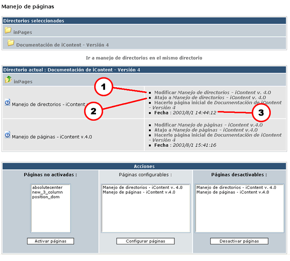
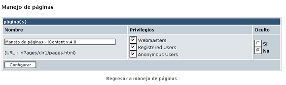
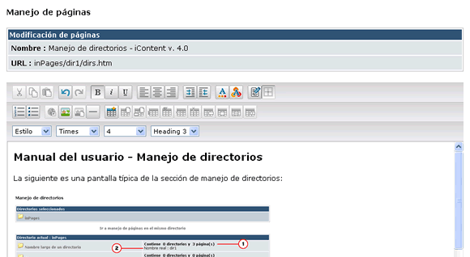

La siguiente es una pantalla típica de la sección de manejo de páginas:

Figura 1. Las tablas para Manejo de páginas
El principio de esta tabla es rigurosamente el mismo que el de manejo de directorios. Para ver más detalles, por favor lee la sección correspondiente en "Manejo de directorios - iContent v4.0".
El título de esta tabla indica en qué directorio estás instalado actualmente. Debajo del título se muestra el contenido del directorio actual y, a la derecha de cada elemento, las informaciones que le conciernen o, en el caso de las páginas, la lista de acciones que puedes ejecutar sobre cada página en cuestión. Para la información sobre los directorios, puedes leer más en la sección correspondiente en "Manejo de directorios - iContent v4.0". Debe notarse que, al igual que en el caso de manejo de directorios, solamente se muestra en esta parte el contenido que haya sido previamente activado.
Esta es la lista de comandos a tu disposición para cada página:
Nota: Verás otra opción en esta parte cuando no estés ubicado en la raíz del directorio "iContent/inPages" donde pones los documentos. Esta opción te permite hacer que la página actual sea la página inicial de su directorio padre. Para que quede claro, cuando un visitante hace clic en el nombre del directorio padre en el explorador de iContent, verá directamente desplegarse la página inicial, en vez de el contenido del directorio propiamente dicho.
Esta tercera tabla es totalmente similar a la del manejo de directorio. Te permite efectuar varias acciones sobre una lista de páginas.
Para activar una página deberás haber activado previamente todos sus directorios padres. Revisa la sección correspondiente de "Manejo de directorios - iContent v4.0" para saber cómo proceder. En seguida, una vez hecha esta operación, navega hacia el directorio padre de la página y selecciona su nombre en la tabla "Acciones", en la columna de la extrema izquierda (Ojo: el nombre que tenga la página será el nombre físico del documento en el servidor). Haz clic en "Activar páginas" para activar la o las página(s) seleccionada(s).
Esta parte es idéntica a la presentada en el manejo de directorios. Refiérete a la sección apropiada de "Manejo de directorios - iContent v4.0" para una información más amplia.
Esta es una imagen de la pantalla que aparece cuando eliges configuración de páginas:

Figura 2. Las tablas para Configuración de páginas
La configuración de una o varias páginas es similar a la de un directorio. Sin embargo, debe notarse que esto no es válido para la "Página inicial".
Navega hacia el directorio padre de la página que deseas desactivar y luego, en la tabla "Acciones", en la columna de la extrema derecha, selecciona la o las página(s) que quieres desactivar (su nombre será el que les hayas puesto en la opción de configuración), y haz clic en el botón "Desactivar páginas".
Nota: una página no puede, por supuesto, ser desactivada más que cuando ha sido activada. Además, desactivar una página no borrará el archivo que pusiste en el servidor. Sin embargo, cuando desactivas una página pierdes todas las modificaciones que le hayas hecho en línea, así que sé prudente.
Esta es una imagen de la pantalla que aparece típicamente cuando eliges modificar una página:

Figura 3. La imagen que ves en Modificar una página.
Para modificar una página navega hasta su directorio padre, y después, en la columna situada junto a su nombre en la tabla "Directorio actual" (Indicador 1 de la Imagen 1) haz clic en la liga "Modificar nombre de la página", tras lo cual verás aparecer la interfaz de edición recién mostrada. Una vez modificada la página, haz clic en la parte inferior sobre el botón "Modificar" para que tus modificaciones se apliquen.
Nota sobre la inserción de imágenes: todas las imágenes que insertes usando esta interfaz (y no manualmente usando un etiqueta IMG SRC) están en el directorio "inPages/imagesLibrary". Por tanto deberás subir a este directorio todas las imágenes que quieras insertar en línea. Por lo demás, es vital para el buen funcionamiento de iContent que nunca borres el directorio dossier "inPages/imagesLibrary".
A partir de la versión 4 ya no es necesario eliminar las etiquetas <head>...</head> , e incluso . iContent lo hace por ti. Además, con respecto a la versión 3, el hecho de que iContent no modifica ciertos URLs ha cambiado ligeramente. A partir de ahora, todo URL relativo que empiece por "inPages" no será corregido y será por tanto considerado en cierto modo como un URL absoluto. "inPages" aparece ahora como una palabra reservada de iContent. Por tanto te aconsejo evitar su uso, en particular para las páginas que se encuentren en el directorio raíz de "inPages".
A partir de la versión 4 las páginas son tratadas y luego compiladas en el directorio "compiled". Si no ha habido modificaciones o actualizaciones de la página original (que por tanto no se habrá modificado, como bien comprenderás), se desplegará directamente el archivo compilado; si no es así, será automáticamente actualizado. De esta manera, iContent ya no hará modificaciones de la página en tiempo real, lo que permite soportar una carga más importante de visitantes sin sobrecargar los recursos del servidor.
Notas: La administración de ligas y URL varios está mucho mejor puesta a punto a partir de la versión 4, gracias a su totalmente nuevo compilador; sin embargo, los formularios, los controles ActiveX y los objetos Flash no son administrados aún, lo que no debería tardar mucho. A partir de esta versión iContent se dedica a compilar páginas HTML, por tanto sólo estas páginas pueden ser activadas vía el administrador.